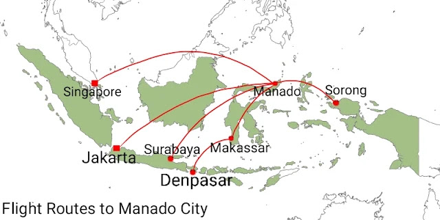

Sonder is a small subdistrict town in the highland of Minahasa regency - Indonesia that is good for birdwatching and butterfly watching. A lot of species of tropical birds could be seen there. In Tounelet forest, there are birds such as Sooty-headed Bulbul (Pycnonotus aurogaster), Collared Kingfisher (Todiramphus chloris), Chestnut (Black-headed) Munia, Scaly-breasted Munia, Grey-cheeked Green Pigeon, Sulawesi Cuckoo-dove (Macropygia albicapilla), Sulawesi Hanging Parrot, Sulawesi Pygmy Woodpecker, Black-naped Oriole, Cattle Egret, Little Egret, Gray-sided Flowerpecker, Slender-billed Crow, Sahul Sunbird, Sooty-headed Bulbul, Pale Blue Monarch, Purple Needletail, White-nest Swiftlet and etc.

Another interesting birdwatching site in Sonder town is terraces of rice fields. We could enjoy easy walking along the roadside to see the beautiful scenery and at the same time watch such birds as Collared Kingfisher, White-breasted Woodswallow, White-browed Crake, Cattle Egret, Eastern Yellow Wagtail, and etc.
The birdwatching activity can be done early in the mornings from 06:00 to 09:00 and at late afternoons from 15:00 to 18:00. The hill forest of Sonder is a great place to go. There, visitors could find Black-faced Munia, White-faced Cuckoo Dove, Mountain (Warbling) White-eye, Crimson Sunbird, Sulawesi Drongo, Yellow-sided Flowerpecker.


Butterfly watching
Sonder is also a great destination for butterfly watching. This activity can be done along the roadside of agricultural lands. There are Blanchard's Wood Nymph, Blanchard's Tree Nymph, The Clipper, The Common Birdwing Butterfly. Visitors must not collect any insects when doing the butterfly watching activity.

Accommodation
There are several houses that can be used as homestay. Visitors can stay there during their tour in District town of Sonder. The average duration of holiday in Sonder can be as short as 3 days to as long as 1 week. As a tour guide, we could arrange the booking of the homestay of hotel room for participants of the tour.
In Tomohon town, there are Jhoanie Hotel, Hotel Villa Emitta, Wise Hotel Tomohon, Mountain View Resort and Spa, and etc.

How to get there?
Visitors need to fly from their country to one of the major cities of Indonesia such as Jakarta, Surabaya, Denpasar and Makassar. After that the trip can be continued by taking a domestic flight to Manado city. There are daily flights between these cities and Manado city served by airlines such as Garuda, TransNusa, Batik Air, Lion Air, Citilink. When you have arrived at the airport of Manado city, I could meet you and organize your trip to Sonder.

Tours Across Minahasa Highland and North Sulawesi
Your holiday to Sonder town can be combined with trips to other parts in Minahasa highland and further to other areas in North Sulawesi.
Booking
If you are interested in taking a holiday in Sonder town, Manado city, other places across Minahasa highland, places in the Province of North Sulawesi and want me to organize your trip, please, contact me (Charles Roring) by email to: peace4wp@gmail.com or by whatsapp to +6281332245180.